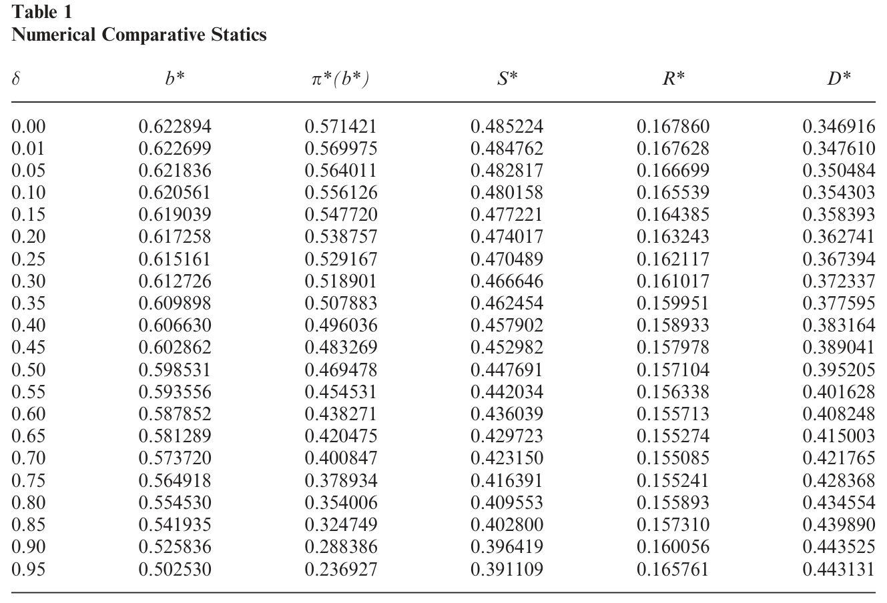
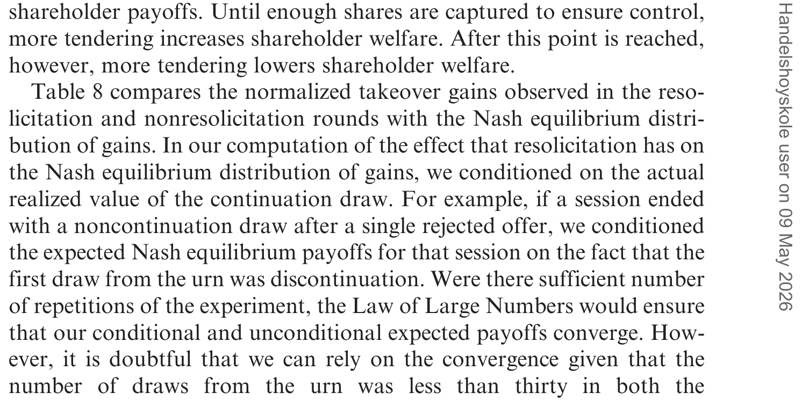
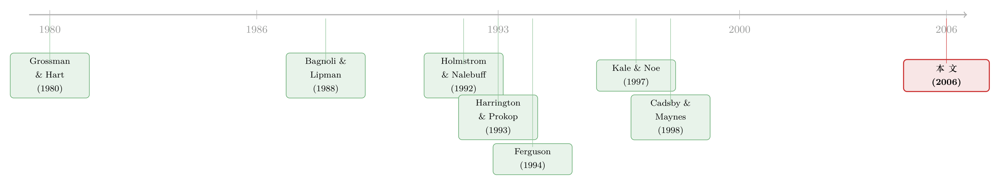

差一点就成的收购：当「下次再来」反而毁掉了这笔买卖
本文读的是 Gillette & Noe (2006, Review of Financial Studies)：在收购中，如果袭击者（raider）拥有「被拒之后还能再出价」的重新邀约（resolicit）选项，理论上反而会加重而非缓解搭便车造成的价值损耗——因为「下次还能再来」削弱了当前这一次出价的可信度。作者用一个马尔可夫博弈模型证明了这一点，又用实验室实验做了检验：在可重新邀约的回合里，袭击者最终只拿到了不足 3% 的协同价值，比理论预测还要少 70% 以上。
1 一个被「机会太多」拖垮的好生意
先讲一个让人有点意外的直觉。
设想你是一个袭击者，盯上了一家管理松散的公司。你算得很清楚：只要把它拿下、换上更好的经营，公司每股的价值能从今天的「几乎一文不值」涨到 $1。这是一笔实打实的协同收益，是社会意义上的「把饼做大」。你向分散的小股东们发出要约，承诺只要有足够多的人接受、你拿到控制权，每个接受的人就能拿到出价 b。
问题来了。每一个理性的小股东都会这样盘算：「如果别人接受得够多、收购成功了，那么我手里没有卖出的那一股，会因为收购后的经营改善而值满满 $1——比你给我的出价 b 还高。所以最聪明的做法，是我不卖，让别人去卖。」这就是 Grossman 和 Hart (1980) 写进教科书的搭便车问题（free-rider problem）：人人都想坐享其成，结果是好的收购在低于收购后价值的价格上根本做不成，社会收益被白白耗散。
到这里都还是老故事。接着，一个自然的问题是：现实中的收购，从来不是「一锤子买卖」。Oracle 当年追求 PeopleSoft，从每股 $16 一路加到最后的 $26.50，反反复复出了一连串价。Betton 和 Eckbo (2000) 在 1971–1990 年的要约收购样本里发现，62% 的竞购只有一次出价，而在含多次出价的 38% 里，又有 41% 自始至终只有一个竞购方——也就是说，反复加价并不是被竞争对手逼出来的，而是袭击者自己一次又一次回来重谈。
那么，能「重新邀约」这件事，对搭便车到底是好是坏？
直觉上，似乎是好事。这正是那句老话——"If at first you don't succeed, try, try again"（一次不成，再试再试）。一笔买卖只要在任何一次出价里被接受就算成交；出价的机会越多，总有一次能成的概率就越大。作者把这个力量叫作重新邀约的直接效应（direct effect）。
但真正关键的一步在于，还有一句听上去截然相反的话。Samuel Johnson 说过：「先生，您放心，一个人若知道自己两周后就要上绞架，他的心思会专注得出奇。」（"Depend upon it, sir, when a man knows he is to be hanged in a fortnight, it concentrates his mind wonderfully."）翻译成收购的语言就是：只有当损失迫在眉睫、不可挽回时，股东才会把这次要约当回事。一旦你给了大家一个「这次不成、下次还能再来」的退路，每个人的搭便车冲动就会被放大——反正错过这一班车，下一班还会来。作者把这个反向的力量叫作可信度效应（credibility effect）。
于是整篇论文就被悬在了这两股力量之间：重新邀约的选项，究竟是「多给了几次机会」从而减少损耗，还是「抽走了紧迫感」从而加剧损耗？ 这就是全文要反复讲透的那一个核心。
2 把直觉写成一个博弈
要回答这个问题，光靠对仗工整的格言不够，得把它写成一个能算的模型。
设一家公司有 N 个股东，记 [N] = {1,2,...,N}，每人持有一股不可分割的股票。收购后每股值 $1，收购前（站在小股东自身角度）一文不值。袭击者要拿到控制权，必须征集到至少 K 股，且 0 < K < N。要约是有条件的（conditional）：如果接受的人数达到 K，控制权转移、游戏结束，接受者拿 b、没接受者拿 $1；如果不足 K，收购失败，所有已交出的股票原样退回。
这里出现了模型最精巧的一块设计——动态。时间是离散的 d = 0, 1, 2, ...。每当一次出价失败，有 1 − θ 的概率，袭击者所能创造的那点经营改善「蒸发」掉：博弈终止，所有人（袭击者和股东）都拿 0。若没蒸发（概率 θ），袭击者就能在下一期重新出价。作者把 θ 叫作延续概率（continuation probability）——它正是「重新邀约选项有多值钱」的旋钮。θ 越大，下次还能再来的可能性越高，重新邀约的力量就越强。
注意这个建模的妙处：当 θ → 0（几乎一拒绝就蒸发），博弈退化成实验金融里经典的「一次性搭便车收购」；当只有一个股东（消除了协调问题），它又退化成一个动态讨价还价博弈。一个旋钮，把两个文献串了起来。
接下来求马尔可夫均衡（Markovian equilibrium）。由于失败的有条件要约不会留下任何后续影响、改善收益只在「尚未蒸发」这唯一一个状态里才有意义，马尔可夫假设意味着整个系统只有一个非平凡状态。于是每个股东的策略可以简化成：给定袭击者当前的出价 b，我以多大概率 p 把股票交出去。袭击者的策略也简化成一个常数：他在每一期都报同一个价 b ∈ [0,1]。
2.1 一个股东的账本
先固定袭击者的出价 b，看单个股东 i 怎么算账。令 t_i(p) 表示「在 i 交出股票、其余股东各自以概率 p 交出」的条件下，收购成功的概率；令 nt_i(p) 表示「i 不交、其余人以 p 交」时成功的概率。
股东 i 交出股票的期望收益，由两块构成——当期成交的收益，加上失败后还能延续下去的期权价值：
$$ w_i^{T} = t_i(p)\,b + \theta\,[1 - t_i(p)]\,w_i^{T}. $$
这一步是全篇的「发动机」，值得逐项拆开看。第一项 t_i(p)·b：以成功概率 t_i(p) 拿到出价 b。第二项 θ[1−t_i(p)]·w_i^T：只有当这次失败（概率 1 − t_i(p)）且收益没蒸发（概率 θ）时，才有资格进入下一轮、继续享有同样的延续价值 w_i^T。把这个自指的方程解出来，就得到论文的式 (1)：
同理，不交出股票的收益是式 (2)：
$$ w_i^{NT}(p,b) = \frac{nt_i(p)}{1-\theta[1-nt_i(p)]}. $$
直觉检验一下：若这次必成（t_i(p) = 1），交出去的收益就退化成出价 b；若必败（t_i = 0），收益归零——因为要约以成功为条件，而收购前公司一文不值。同样地，若即使 i 不交也必成（nt_i(p) = 1），那不交的收益就等于 $1，比交出去更划算。搭便车的诱惑，正写在这个 $1 > b 里。
2.2 为什么均衡一定是「掷骰子」
作者证明：对每一个固定出价 b ∈ (0,1)，所有对称的子博弈均衡都是混合策略。证明很漂亮，是个排除法。
考虑两个纯策略候选。先看「人人都交」（p = 1）：如果别人都交，收购铁定成功，那我自己不交才最优（拿 $1 而不是 b）——所以「人人都交」站不住。再看「人人都不交」（p = 0）：如果别人都不交，收购必败，那我交不交都一样拿 0，看似是个均衡。但这里 Selten (1975) 的颤抖手精炼（perfection refinement）出场了：只要别人交的概率从 0 微微抬起一点点，我的最优反应立刻跳成「以概率 1 交」。所以「人人都不交」经不起微小扰动，不是完美均衡。
两个纯策略都被排除，对称均衡只能是混合策略。而混合策略要求每个股东在「交」与「不交」之间恰好无差异：w_i^T = w_i^{NT}。把式 (1)、(2) 代入，并注意到 i 交出时只需其余 N−1 人中再有 K−1 人跟进（故 t_i(p) = B_{K-1}(p)），i 不交时则需其余人中有 K 人（故 nt_i(p) = B_K(p)），就得到决定均衡交出概率的式 (3)：
$$ \frac{b\,B_{K-1}(p)}{1-\theta[1-B_{K-1}(p)]} = \frac{B_K(p)}{1-\theta[1-B_K(p)]}, $$
其中 B_k(p) 是「N−1 人中至少 k 人交出」的二项尾概率：
$$ B_k(p) = \sum_{j=k}^{N-1}\binom{N-1}{j}\,p^{\,j}\,(1-p)^{\,(N-1)-j}. $$
作者证明（引理 1）：对每个 b，式 (3) 有唯一的解 p*(b)。没有闭式解，但数值上很好算。袭击者则在这之上再优化一层，挑出让自己期望利润最大的出价（式 4）：
$$ \max_{b\in(0,1)}\ \frac{(1-b)\,E_{p^*(b)}\!\big[\tilde{S}\mid \tilde{S}\ge K\big]\,P_{p^*(b)}(\tilde{S}\ge K)}{1-\theta\,[1-P_{p^*(b)}(\tilde{S}\ge K)]}. $$
2.3 旋钮一拧，账本就变了
现在回到那个核心问题。把延续概率 θ 这个旋钮慢慢拧大，均衡会怎么动？数值分析给出四条比较静态：
- (i) 袭击者的出价
b缓慢下降——既然股东更难被打动，硬加价不划算。 - (ii) 股东的交出概率
p大幅下降——这是关键。θ越大，每个人越敢搭便车。 - (iii) 博弈以「价值蒸发」收场的概率反而上升——更多机会，却换来更高的失败率。
- (iv) 袭击者的收益先降后升。
第 (ii)、(iii) 两条，正是可信度效应压倒直接效应的铁证：给了「下次再来」的退路，股东的搭便车强度上升得如此之快，以至于价值耗散不降反升。耗散损失有一个干净的闭式（P* 是均衡下收购成功的概率）：
$$ D^{*} = \frac{(1-\theta)(1-P^{*})}{1-(1-P^{*})\,\theta},\qquad P^{*} = P_{p^*(b^*)}(\tilde{S}\ge K). $$
如表 1 所示，作者把这些均衡量随 θ 的变化逐行列了出来——交出概率的下滑远比出价的回落陡峭，这正是「可信度被抽走」在数字上的样子。

Table 1: arefocused on the effect ofvarying (cid:2)
于是，在纯理论里，反转已经出现了：重新邀约这个看似「多送几次机会」的好东西，实际把搭便车的耗散成本推高了。Samuel Johnson 赢了那句老格言。
3 把模型搬进实验室
理论归理论。可信度效应是不是真的会在「活人」身上发生？这是这篇论文比同类纯理论工作更进一步的地方——它把模型搬进了实验室。
作者用 N = 7、K = 4 的七人公司做实验，唯一变动的外生参数就是延续概率 θ。两个处理（treatment）：θ = 0.01 的回合称为非重新邀约回合（nonresolicitation rounds），θ = 0.75 的回合称为重新邀约回合（resolicitation rounds）。实验设计特意控制了被试个体行为差异在不同处理间的干扰，让两组之间的对比尽量干净。
为什么用 0.01 而不是 0.00？因为作者想保留「理论上仍可能延续」的连续性，又要让它在实践中近乎不可能；0.75 则是为了让重新邀约的力量足够强、又不至于让游戏永远停不下来。
结果是这样的，而且比理论预测更极端：
第一，两种处理下，股东都「交得太少」。 相对于纳什均衡预测，被试的交出强度显著偏低——搭便车比理论说的还要严重。
第二，袭击者「给得太多」。 初始出价比理论预测略高（但起初不显著）；而在重新邀约回合的后续期里，袭击者的平均出价显著超过了纳什预测——他们眼看交易做不成，急了，不停加价。
第三，可即便袭击者加价加到超出理论，股东的交出强度依然显著低于纳什预测，更不用说低于「对这种过度慷慨的报价本该有的反应」。买家拼命加价，卖家依旧按兵不动。
两边行为叠加的净效果，是巨大的价值耗散和双输的低收益。超额耗散的幅度在有无重新邀约两组里差不多；但袭击者利润相对理论预测的负向偏离，在重新邀约组里要大得多。如表 8 所示，在可重新邀约的回合里，袭击者最终只攫取了不到 3% 的收购价值——比理论预测的份额还少了 70% 以上。重新邀约的选项，对袭击者的利润是一记格外狠的重击，比理论说的还狠。

Table 8: compares the normalized takeover gains observed in the reso-
把这个结论和一个更早的纯理论结果对照，会更有味道。Harrington 和 Prokop (1993) 在一个无条件要约（unconditional offer）的框架里证明：当重新邀约的成本趋于零时，搭便车会把收购的社会收益完全吃光。Gillette 和 Noe 这篇论文一方面指出，他们那个「收益归零」的结论依赖于「无条件要约」这个假设——在有条件要约下，社会收益并不会随重新邀约成本归零而消失；但另一方面，实验里观察到的极高搭便车水平，又恰恰与他们那个无条件模型的预测对得上。换句话说，理论上有条件要约本该把损失兜住，可活生生的人玩起来，行为却滑向了「无条件」那个更糟的预测。这是全文最耐人寻味的一处张力。
4 文献脉络
把这条线索拉直来看，会更清楚这篇论文站在哪里。
一切的起点是 Grossman 和 Hart (1980)。他们假设股东「非策略性」（不考虑自己一票对总体结果的影响），由此推出搭便车会让低于收购后价值的收购全部失败——这是搭便车问题的「原罪叙事」。
接着，Bagnoli 和 Lipman (1988) 指出：当股东数目有限、且行为是策略性的，搭便车并非普遍，存在并非人人搭便车的均衡。Noe (1995) 进一步说明，即便在某些「无穷多代理人」的设定里，普遍搭便车也不是唯一结局。但真正的共识是：即使在这些策略性设定里，仍有一部分价值会因搭便车而耗散——问题从「能不能成」变成了「耗散多少」。
然后，Holmstrom 和 Nalebuff (1992) 重新审视了「剩余到底归谁」这个问题（"To the raider goes the surplus?"），给出了对称混合策略均衡的刻画，本文对单个股东最优反应的分析正建立在他们的附录之上。
这条线索里最直接的前身，是 Harrington 和 Prokop (1993)——他们第一个把「重新邀约」写进动态搭便车模型，但用的是无条件要约，结论是「收益归零」。与此同时，Ferguson (1994) 发展了一个有条件要约的马尔可夫模型，为本文的设定提供了骨架。
另一条平行的支流，是实验金融。 Kale 和 Noe (1997) 在实验室里对比了无条件与有条件要约；Cadsby 和 Maynes (1998)、Hamaguchi 等 (2002) 也用实验研究了收购中的搭便车。本文正是站在这两条支流的交汇处：既扩展了「重新邀约 + 有条件要约」的理论，又第一个用实验检验了「动态/重新邀约」对搭便车的影响——据作者所知，这在公司金融实验文献里是头一回。

顺带一提，关于「卖公司」这件事在博弈结构上的精巧，本博客另有两篇可以对读：一篇讲卖方为何在多竞购者之间「故意偏心」才最优（见《卖公司这件事：为什么最优的玩法，是「故意偏心」》），一篇讲提前卖出股权如何反过来逼对手「抢着加价」（见《一笔提前卖出的股权，是为了让你将来「抢着加价」》）。它们和本文一样，核心都是「承诺与可信度如何重写一笔交易的最终分配」。
5 评论与延伸（Q&A + 研究方向）
(a) 几个可能的疑问
Q：「直接效应 vs 可信度效应」到底新在哪里？这不就是「有退路就不努力」吗？
直觉确实朴素，但贡献在于把它形式化并定量化了。模型给出了一个可检验的、反直觉的比较静态：随着延续概率
θ上升，耗散概率（第 iii 条）不降反升。这不是一句格言，而是一个能被实验证伪的预测——而实验确实没有推翻它，反而走得更远。
Q：为什么强调「有条件要约」这个设定？换成无条件会怎样？
这是本文和 Harrington-Prokop (1993) 的分水岭。在无条件要约下，即便收购失败你交出的股票也被买走，因此「重新邀约成本趋零 ⇒ 收益归零」。本文证明在有条件要约（失败则退回）下，社会收益不会随成本归零而消失——理论上有条件要约本应兜住损失。这让实验结果格外刺眼：人玩起来，行为却滑向了更糟的无条件预测。
Q：实验里「袭击者加价加到超过理论、股东却依然不卖」，会不会只是被试不懂博弈？
不能完全排除认知噪声，但作者的设计对此有防御：跨处理控制了个体行为差异，所以「重新邀约组的负向偏离更大」这个组间对比不太可能仅由「普遍不理解」解释——若是单纯犯糊涂，两组应当对称地糊涂。更可能的是，
θ一高，搭便车的诱惑被系统性放大了。
Q：θ = 0.75 是不是挑出来的、为了把效应做大？
作者坦承
0.75是为了让重新邀约的力量「足够强又不至于游戏停不下来」而选的；0.01则代表近乎一次性。这是实验参数的常规取舍，但也意味着外部效度有限——现实收购的「延续概率」是多少、是否接近0.75，模型本身不回答。
Q：模型完全抽掉了竞购者之间的竞争，这会不会致命？
这是最大的限制，作者自己也点明了。不过他们论证许多洞见可外推到有竞争的情形；而且 Betton-Eckbo (2000) 的经验事实——多数多次出价并非由竞争驱动——恰恰为「单一袭击者反复重新邀约」这个抽象提供了现实依据。即便如此，把竞争装回来仍可能改变可信度效应的方向。
Q：这对真实并购有什么可操作的含义？
一个反直觉的政策/策略含义是：让袭击者「能轻易回来」未必是好事。若想减少搭便车耗散、提高成交效率，制度上反而可能要为「重新邀约」设置成本或限制，制造一点「这次不成就真没了」的紧迫感——这与「终止费/截止机制如何塑造竞购」的争论相通（参见《终止费到底是「锁门」还是「关灯」？》）。
(b) 几个可能的研究问题与提案
1. 把「重新邀约」搬到公司债的同意征求（consent solicitation）里。
- 【经济故事】债券的交换要约（exchange offer）与契约修订同样面临搭便车：持有人想坐等别人同意、自己保留旧契约的高价值。若发行人能反复发起同意征求，可信度效应是否会同样加剧持有人的「钉住不动」，推高重组失败、滑向无序违约？
- 【可行性】中。Mergent FISD + 交易所公告可识别交换要约与同意征求事件；识别难在「重新邀约能力」缺乏干净外生变异，可考虑契约门槛（collective action clause 的有无）作为横截面差异。doable，但需要手工搜集要约时间线。
2. 用「钉子户/搭便车强度」预测重组与收购的失败。
- 【经济故事】本文给出可信度效应的微观机制；可在真实样本里构造「延续概率」的代理（如行业再来一次出价的历史频率），检验它是否正向预测竞购失败率与价值耗散。
- 【可行性】中。SDC Platinum 收购样本可测多次出价与成败；难点是把「延续概率」操作化且与基本面分离，识别偏弱，更适合做描述性证据而非因果。
3. 外资持有人会不会改变搭便车的强度？
- 【经济故事】分散的外资股东协调更难、信息更不对称，可信度效应在他们身上可能更强；反之，若外资以指数基金形式被动持有，又可能改变交出意愿。把「持有人结构」作为搭便车强度的调节变量是自然的延伸。
- 【可行性】中偏低。FactSet/13F 可测机构与外资持股，但要约层面的「逐人交出决策」不可观测，只能用成交概率间接逼近；识别困难，宜先做实验室复刻再上田野数据。
4. 在实验室里直接「定价」可信度效应。
- 【经济故事】本文只比较了两个 θ。一个自然的延伸是把 θ 做成连续梯度（如 0.1, 0.3, 0.5, 0.7, 0.9），实测耗散随 θ 的曲线，检验第 (iii)、(iv) 条比较静态在行为上的形状，看「先降后升」的袭击者收益是否真的出现拐点。
- 【可行性】高。纯实验设计，参数完全可控，是对本文最直接、最干净的扩展，doable。
5. 把「沟通/承诺」作为处理变量加进来。 - 【经济故事】如果允许袭击者可信地承诺「绝不重新邀约」（比如一次性押金会因再次出价而没收），可信度效应应当被压制、耗散下降。这能直接检验「问题出在缺乏承诺」这一机制。 - 【可行性】高。在现有实验框架里增设一个「可承诺」处理即可，是机制检验的理想设计。
6 我的判断
这篇论文最让我欣赏的，是它的克制与诚实。它没有去解释现实中纷繁的并购数据，而是把一个尖锐的理论命题——「重新邀约究竟帮忙还是帮倒忙」——拆成两股可命名的力量，证明可信度效应胜出，再用实验室里可控的对照把它逼出来。理论与实验「双重确认」，且实验结果比理论更极端（袭击者只拿不到 3%），这种「现实比模型更残酷」的发现，往往比「模型完美拟合」更有说服力，因为它指向了模型尚未捕捉的行为力量。
对识别的担忧也很清楚，作者自己大多点到了。其一，完全抽掉了竞购竞争，而真实收购里竞争与重新邀约常常缠在一起，把竞争装回来未必不改变结论方向。其二，参数是挑的：θ = 0.75 与七人小公司离真实的分散持股相去甚远，外部效度有限；现实收购的「延续概率」究竟几何，模型不答。其三，实验被试是学生，「上绞架的紧迫感」在实验室里能否真正复现，本身就是个行为学问号。
我接下来最想看到的，是两件事。一是把 θ 做成连续梯度的实验，画出耗散随延续概率变化的整条曲线，看第 (iii)、(iv) 条比较静态在活人身上是不是真的成立、拐点在哪。二是一个带可信承诺装置的处理——如果让袭击者能把「绝不再来」绑死，耗散真的会塌下去吗？那将是对「问题出在缺乏承诺」这一核心机制最干净的一击。在更现实的方向上，公司债的同意征求与交换要约，是把这套「重新邀约 × 搭便车」逻辑搬出实验室、放进真实信用市场的最自然的实验场。
参考文献
- Bagnoli, M., and B. Lipman (1988). Successful Takeovers Without Exclusion. The Review of Financial Studies 1, 89–110.
- Betton, S., and E. Eckbo (2000). Toeholds, Bid-Jumps and Expected Payoffs in Takeovers. Review of Financial Studies 13, 841–882.
- Cadsby, B., and E. Maynes (1998). Corporate Takeovers in the Laboratory when Shareholders Own More than One Share. Journal of Business 71, 537–572.
- Ferguson, M. (1994). Ownership Structure, Potential Competition, and the Free-Rider Problem of Tender Offers. The Journal of Law and Economics & Organization 10(1), 35–62.
- Gillette, A. B., and T. H. Noe (2006). If at First You Don't Succeed: The Effect of the Option to Resolicit on Corporate Takeovers. Review of Financial Studies 19(2), 561–603.
- Grossman, S., and O. Hart (1980). Takeover Bids, the Free-Rider Problem, and the Theory of the Corporation. The Bell Journal of Economics 11, 42–64.
- Hamaguchi, Y., S. Hirota, T. Kawagoe, and T. Saijo (2002). Does the Free-Rider Problem Occur in Corporate Takeovers? Evidence from Laboratory Markets. Working Paper, Waseda University.
- Harrington, J., and J. Prokop (1993). The Dynamics of the Free-Rider Problem in Takeovers. Review of Financial Studies 6, 851–882.
- Holmstrom, B., and B. Nalebuff (1992). To the Raider Goes the Surplus? A Reexamination of the Free-Rider Problem. Journal of Economics and Management Strategy 1, 37–62.
- Kale, J., and T. Noe (1997). Unconditional and Conditional Takeover Offers: Experimental Evidence. Review of Financial Studies 10(3), 735–766.
- Noe, T. (1995). Takeovers of Diffusely Held Firms: A Nonstandard Approach. Mathematical Finance 5, 247–277.
- Selten, R. (1975). A Re-Examination of the Perfectness Concept for Equilibrium Points in Extensive Games. International Journal of Game Theory 4, 25–55.